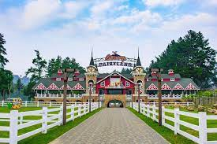
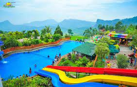
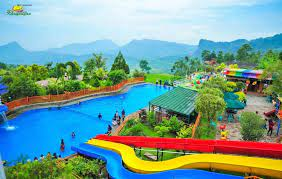
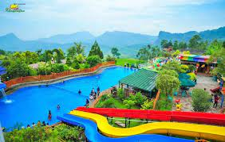

Sejak 1956, tanggal 22 Juni ditetapkan sebagai hari jadi Kota Jakarta. Sebelum ditetapkan sebagai ibu kota dan berkembang menjadi kota terbesar Indonesia, wilayah yang saat ini dinamakan Jakarta mempunyai riwayat yang sangat panjang. Riwayatnya sebagai tempat hunian manusia dimulai ketika digunakan sebagai pemukiman sederhana pada zaman prasejarah. Hal ini dapat diketahui dari situs-situs kepurbakalaan prasejarah yang ada di Jakarta.
Kemudian pada masa kekuasaan Kerajaan Tarumanegara, atau sekitar abad ke-5 Masehi, wilayah ini dikenal bernama Sunda Kelapa. Sejak saat itu, Sunda Kelapa sempat beberapa kali mengalami perubahan nama dan terus tumbuh sebagai kota pusat perdagangan hingga akhirnya menjadi kota pusat kekuasaan seperti sekarang ini.
Geografis
Jakarta terdiri dari dataran rendah dengan ketinggian rata-rata 7 meter di atas permukaan laut, terletak pada posisi 6°12' Lintang Selatan dan 106°48' Bujur Timur. Berdasarkan Keputusan Gubernur Nomor 1227 Tahun 1989, luas wilayah Provinsi DKI Jakarta adalah 7.659,02 km2, terdiri dari daratan seluas 661,52 km2, termasuk 110 pulau di Kepulauan Seribu, dan lautan seluas 6.997,50 km2. Provinsi DKI Jakarta terbagi menjadi 5 wilayah kotamadya dan satu kabupaten administratif, yakni: Kotamadya Jakarta Pusat dengan luas 47,90 km2, Jakarta Utara dengan luas 142,20 km2, Jakarta Barat dengan luas 126,15 km2, Jakarta Selatan dengan luas 145,73 km2, dan Kotamadya Jakarta Timur dengan luas 187,73 km2, serta Kabupaten Administratif Kepulauan Seribu dengan luas 11,81 km2. Di sebelah utara membentang pantai sepanjang 35 km,yang menjadi tempat bermuaranya 13 buah sungai dan 2 buah kanal. Di sebelah selatan dan timur berbatasan dengan Kota Depok, Kabupaten Bogor, Kota Bekasi dan Kabupaten Bekasi, sebelah barat dengan Kota Tangerang dan Kabupaten Tangerang, serta di sebelah utara dengan Laut Jawa.
Keadaan Kota Jakarta umumnya beriklim panas dengan suhu udara maksimum berkisar 32,7°C - 34°C pada siang hari, dan suhu udara minimum berkisar 23,8°C -25,4°C pada malam hari. Rata-rata curah hujan sepanjang tahun 237,96 mm, selama periode 2002-2006 curah hujan terendah sebesar 122,0 mm terjadi pada tahun 2002 dan tertinggi sebesar 267,4 mm terjadi pada tahun 2005, dengan tingkat kelembaban udara mencapai 73,0 - 78,0 persen dan kecepatan angin rata-rata mencapai 2,2 m/detik - 2,5 m/detik. Laju pertumbuhan penduduk pada periode tahun 1980-1990 sebesar 2,42 persen per tahun, menurun pada periode 1990-2000 dengan laju 0,16 persen. Pada periode 2000-2005, laju pertumbuhan penduduk sebesar 1,06 persen per tahun. Dilihat dari struktur umur, penduduk Jakarta sudah mengarah ke ”penduduk tua”, artinyaproporsi ”penduduk muda” yaitu yang berumur 0-14 tahun sudah mulai menurun. Bila pada tahun 1990, proporsi penduduk muda masih sebesar 31,9 persen, maka pada tahun 2006 proporsi ini menurun menjadi 23,8 persen. Sepanjang tahun 2002-2006, proporsi penduduk umur muda tersebut relatif stabil, yaitu sekitar 23,8 persen. Sebaliknya proporsi penduduk usia lanjut (65 tahun ke atas) naik dari 1,5 persen pada tahun 1990, menjadi 2,2 persen pada tahun 2000. Tahun 2006, proporsi penduduk usia lanjut mengalami kenaikan menjadi 3,23 persen.
Kota
Daftar Kota di Bogor
No.
Kabupaten/Kota
Kota
Jumlah Penduduk
Kecamatan
Kelurahan
Lambang
Penduduk
Perubahan
Kepadatan Kota
1.
Kepulauan Seribu
27.478
+1,43%
1.
1.
1.
1.
1.
Galeri
Wisata
Bogor adalah kota yang memiliki banyak temoat wisata alam yang indah


Testimoni
Dunia Fantasi atau Dufan adalah taman bermain terfavorit di Jakarta. Seru banget bisa ke Istana Boneka, bianglala, halilintar, hingga Hysteria. Lokasi Dunia Fantasi: Jl. Lodan Timur No.7, Ancol, Kec. Pademangan, Jakarta Utara. Jam operasional Dunia Fantasi: Senin-Jumat 10.00-17.00 WIB. Harga tiket Dunia Fantasi: mulai Rp200 ribu
Kritik dan Saran
Jika anda memiliki kritik dan saran, silahkan tulis pada kolom dibawah!!☺
 
